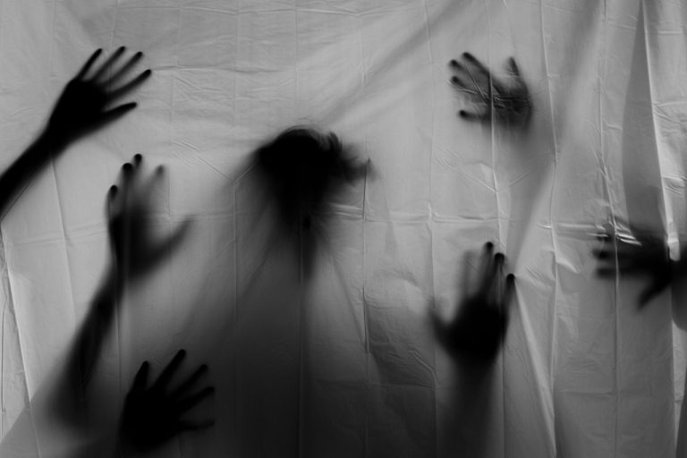

ir para a 𝙡𝙚𝙣𝙙𝙖 𝙙𝙖 𝙡𝙤𝙞𝙧𝙖.𝓐s lendas urbanas brasileiras são narrativas modernas de caráter fantástico ou de terror, transmitidas oralmente ou pela internet, que circulam no imaginário popular como se fossem verdadeiras. 𝓓iferente do folclore tradicional ligado à natureza (como o Saci), essas histórias se adaptam ao contexto urbano e cotidiano, servindo para alertar sobre perigos, refletir medos da sociedade moderna ou explicar acontecimentos misteriosos.